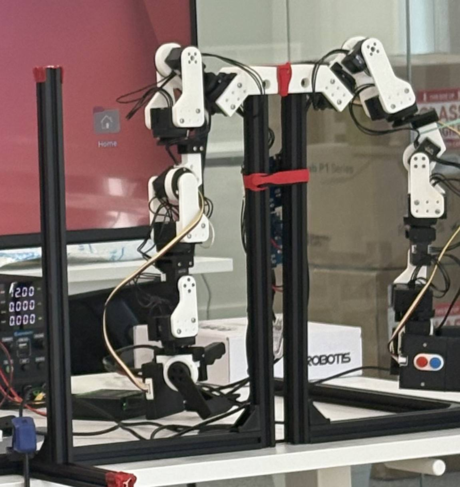

Highlights

Autonomous Pick-and-Place — Grasp & Trajectory
- Integrated Fast Grasp Network for grasp-pose estimation; trajectory planning with MoveIt 2.
- ~780 ms median cycle from point-cloud capture to collision-free execution.

Advanced Tele-operation Redesign — 7-DoF Legacy Manipulator
- Re-architected operator-in-the-loop pipeline with STM32H7 + FreeRTOS running four independent UART buses.
- Added real-time gravity compensation, null-space regulation, and bidirectional force feedback.
- Cut round-trip latency 35 ms → < 10 ms; achieved 500 Hz closed-loop rate.

Adaptive Control Stack — 6-DoF Next-Gen Manipulator
- MPC-based joint-level controller with online payload estimation & feedforward torque compensation.
- >7% mean error in payload estimate; stable tracking even during highly dynamic motion.
- Custom CAN extension board integrated with an NVIDIA Jetson.
Systems & Stack
| Real-time | FreeRTOS on STM32H7; UART×4, CAN, timers, DMA |
|---|---|
| Robotics | ROS2, MoveIt 2, MPC, gravity comp., null-space control |
| Perception | RGB-D, point clouds (Draco), grasp networks |
| Compute | NVIDIA Jetson (CUDA), custom CAN HAT |